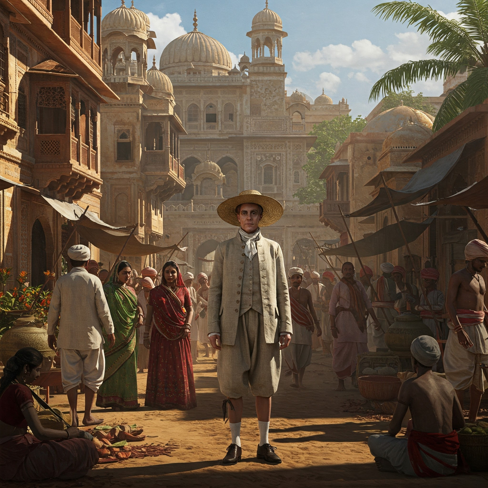

13. Arrival of the Dutch in India and the Indian Ocean Region
Arrival and Background
- The Dutch East India Company known as the VOC (Vereenigde Oost-Indische Compagnie) was founded in 1602 by the Netherlands with the aim of breaking the Portuguese and Spanish monopoly over the spice trade in the Indian Ocean.
- Unlike the Portuguese, who sought to convert people and build an empire, the Dutch focused purely on trade and profit, particularly in spices, textiles, and saltpetre.
- The Dutch arrived on the Indian coast in the early 17th century and started building a network of trading posts and coastal forts to safeguard their commercial interests.
Dutch Expansion and Trade in India
The Dutch built a strong maritime and commercial network in India by setting up factories (trading posts) and fortresses in key coastal regions.
Key Dutch Trading Centers:
- Pulicat (Tamil Nadu) – Their first and most important base on the Coromandel Coast. It became the VOC’s initial Indian headquarters.
- Nagapattinam (Tamil Nadu) – Later overtook Pulicat as the main Dutch settlement in India and was a critical naval and trading hub.
- Chinsurah (Bengal) – A thriving center for silk, sugar, and saltpetre trade, strategically located on the Hooghly River.
- Surat (Gujarat) – A vital western port where the Dutch competed with the English and Portuguese for trade.
- Bhimilipatnam, Cranganore, and Cochin (Kerala) – Smaller yet significant centers, particularly for the spice trade.
Major Dutch Forts in India
1. Fort Geldria – Pulicat, Tamil Nadu
- Built in 1613, this was the first Dutch fort in India and the VOC’s eastern headquarters.
- Named after the Dutch province of Gelderland.
- Housed Dutch officials and soldiers, warehouses for textiles and spices, and the Dutch cemetery, which still survives today.
- Pulicat also became a center for slave trading, which the Dutch conducted across Asia.
2. Fort Vijf Sinnen – Chinsurah, West Bengal
- Established around 1635 along the Hooghly River, its name means "Five Senses" in Dutch.
- Served as a base for trading silk, sugar, indigo, and saltpetre, which was in demand for making gunpowder.
- Dutch buildings and cemeteries still exist in Chinsurah, showing their cultural legacy in Bengal.
3. Fort at Nagapattinam – Tamil Nadu
- Captured from the Portuguese in the mid-1600s, this fort became the main Dutch headquarters after Pulicat.
- It was one of their strongest military and naval posts on the east coast.
- The British took the fort in 1781 during the Anglo-Dutch conflicts, marking the beginning of Dutch decline.
4. Fort Emmanuel – Cochin (Kochi), Kerala
- Originally built by the Portuguese; the Dutch captured it in 1663.
- Renovated and fortified the area, including the construction of the Dutch Palace (Mattancherry Palace), gifted to the local rulers.
- The Dutch Cemetery, now a protected heritage site, is located here.
- Cochin remained under Dutch control until 1795 and was a vital port for the spice trade.
5. Fort Cranganore – Kodungallur, Kerala
- Captured from the Portuguese in 1662, this fort was used to control access to the backwaters of Kerala and the spice-growing regions.
- Strategically important but saw limited Dutch development beyond its military use.
Dutch Military Strategy in India
- The Dutch military strategy focused on coastal dominance, not inland conquest.
- They used their superior navy to blockade, attack, and capture key trading ports from the Portuguese.
- The VOC often formed temporary alliances with local Indian rulers to gain political and military advantage.
- Forts served more as commercial defense points than administrative centers, protecting Dutch warehouses and ships from rival European powers.
Decline of Dutch Power in India
Causes of Decline:
- The British East India Company became more powerful and forged stronger ties with Indian rulers.
- The Dutch prioritized their more profitable colonies in Indonesia (Dutch East Indies), diverting attention from India.
- VOC corruption, poor management, and high operational costs weakened their Indian network.
- Anglo-Dutch wars, especially in the 17th and 18th centuries, led to territorial losses, including Nagapattinam in 1781.
Final Exit from India:
- By the Anglo-Dutch Treaty of 1824, the Dutch relinquished all their Indian possessions to the British.
- In return, the Dutch retained control over territories in Southeast Asia, especially Indonesia.
Legacy of the Dutch in India
While their presence was more limited compared to the Portuguese or British, the Dutch left behind important architectural and historical legacies, including:
- Dutch cemeteries in Pulicat, Chinsurah, and Cochin.
- Remnants of VOC warehouses, forts, and churches.
- The Dutch Palace in Mattancherry, with murals and artwork depicting Hindu epics.
The Dutch influence was primarily economic and maritime, with minimal cultural integration or administrative legacy in Indian society.